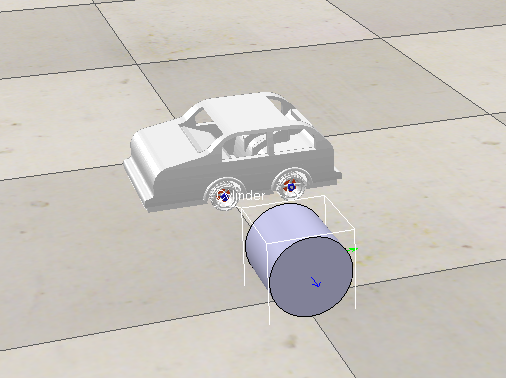
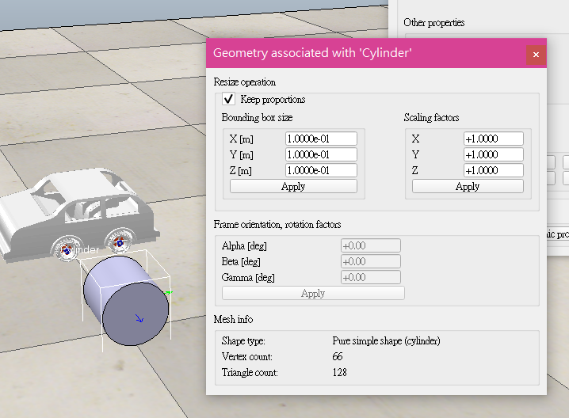

part3 <<
Previous Next >> Assignment1
part4
3.4結構問題：靜載荷
同樣，由於本文並不打算涵蓋所遇到的所有各種結構性考慮事項或問題，因此我想強調一些突出以下內容的問題（我將其保留為三個）：•可以認為是以下兩個問題之一“個體”是指將載荷和力施加到要設計的單個構件或“整體結構”上，也就是說，可以是對整個（組裝）結構的分析。•許多單個零件（或子裝配體）的供應商會在自己的文獻中提供設計指南，這些指南肯定可供單個設計師使用。這些信息大部分基於多年來獲得的經驗和分析經驗。告誡設計人員了解任何這些信息的背景和限制。以圖形或表格格式顯示的某些信息植根於基本原理，但這可能並不明顯。這種可用的“供應商數據”類型的一些示例是塑料，密封件，EMI組件和軸承（僅舉幾例）的設計。
電子外殼中
的構件上的靜態載荷是由於：1.構件自身的重量
2.其他構件施加的載荷
3.由於熱效應，殘餘應力等引起的載荷。靜態載荷會導致構件受力而導致失效：
1.超出材料的屈服強度。
2.構件的過度撓曲，導致構件的性能超出設計意圖。由於所有載荷都會產生一定的撓度，因此必須在設計中的某個時刻知道允許構件產生多少撓度。靜態載荷下的斷裂破壞在韌性材料中不如在脆性材料中常見。在延性構件中，失效通常是由於過度的非彈性作用而導致的，該過度的彈性作用導致在斷裂之前很長的整體變形。動態加載將在Sect中介紹。3.5。動態負載通常是隨時間變化的負載，而靜態負載在相對較短的時間內不會發生顯著變化。電子外殼設計中常見的一些動態載荷是重複載荷，衝擊載荷和能量載荷。能量負荷是指在撞擊期間傳輸的能量（比作用力）更容易表達的負荷。重複載荷造成的斷裂通常稱為“疲勞”故障。振動可能會導致疲勞失效。以下三個問題通常涵蓋的主題是：
1.什麼是光束（相對於平板）？
2.應力公式和最大應力。
3.撓度公式和最大撓度。4.截面模量。
5.彈性模量。6.結束條件。7.負載條件。8.最壞的情況下加載。9.組合加載。
3.4.1懸臂梁分析（來自Tecknit EMI屏蔽產品手冊）
大多數電子外殼應力分析都可以通過計算“簡單”梁來表徵。但是，首先讓我們定義一個光束。Roark和Young（請參閱參考資料[1]）對樑的撓曲公式的應用進行以下假設：•樑的長度必須與其深度成比例，對於金屬梁，跨度/深度比應為8或更大，而15為15或更多用於具有相對薄腹板的梁。Byars和Snyder（參見參考文獻[2]）是一個很好的例子，如圖3.3所示。確定法蘭正下方的A點處的主要法向應力和剪應力。假定彈性行為，並忽略壁上的任何應力集中。解決方案：梁左端的彎矩為：


（當考慮問題中的彎曲應力和剪切應力時，使用莫爾圓來求總應力。）但是，請注意，在這樣短的構件中，其橫截面薄（跨度/深度比= 24/15） = 1.7），則撓曲公式的有效性值得懷疑。請注意，例如，剪應力和法向應力的數量級相同。另外，請注意，要應用正確的跨度/深度比，此樑的長度必須在19英尺的數量級上。以上示例的重要性在於強調了橫向剪應力對最大應力的影響。確定樑的最大應力時，除非用盡所有可能產生最大主應力的彎曲應力和剪切應力組合，否則對結果不滿意。經常，剪切和彎矩圖的構建以及彎曲應力和橫向剪切應力的數量級比較將大大簡化問題。使用上面示例中的一些梁應力公式，我們將繼續解決電子外殼設計人員可能面臨的問題的“主推力”。那就是確定“蓋板”到外殼底盤的（最大）緊固件距離（“ C”）。這種類型的問題涉及外殼周圍的環境密封，這將提供密封作用（請參閱參考資料6）•防止灰塵，濕氣和蒸汽進入•足夠的EMI屏蔽 我們將繼續解決電子外殼設計人員可能面臨的問題的“主旨”。那就是確定“蓋板”到外殼底盤的（最大）緊固件距離（“ C”）。這種類型的問題涉及外殼周圍的環境密封，這將提供密封作用（請參閱參考資料6）•防止灰塵，濕氣和蒸汽進入•足夠的EMI屏蔽 我們將繼續解決電子外殼設計人員可能面臨的問題的“主旨”。那就是確定“蓋板”到外殼底盤的（最大）緊固件距離（“ C”）。這種類型的問題涉及外殼周圍的環境密封，這將提供密封作用（請參閱參考資料6）•防止灰塵，濕氣和蒸汽進入•足夠的EMI屏蔽
我們將在第一章中討論問題的屏蔽部分。9.現在，我們將解決設計基本密封設計幾何形狀方面的“結構性問題”，以保持足夠的強度以提供防潮密封。我將引用《 Tecknit EMI屏蔽產品手冊》中的某些材料（請參閱參考資料[3]）。請注意，這裡我使用的是“手冊”中的一些參考資料。即使在“ Google搜索”時代，這仍然是設計師寶貴的信息來源。這些手冊中有許多是精裝本，可以從原始設備製造商處獲得，以用於設計其特定組件。現在，許多“設計指南”信息都可以在線獲得（而不是精裝手冊中提供）。通常，組件製造商的銷售人員知道當今設計人員可以使用的各種“指南”和在線信息。現在，回到這個環境密封問題的結構考慮：
A.封印材料：稍後在第1章中介紹。7，“產品環境（密封）”
B.蓋板和底盤材料：此處涵蓋的彈性模量（稍後在第4章，“材料和工藝”中涵蓋了腐蝕。表面處理在第7章，“產品環境（密封）”中進行了說明”
C.截面積（需要慣性矩），在此覆蓋
D.螺栓間距，在此覆蓋
E.壓縮擋塊，在此覆蓋
在Tecknit手冊中，通過使用方程式（其中C是螺栓之間的間距）解決了（大約）“緊固件距離”問題。具有以下三個假設：
1.墊圈寬度=蓋板寬度。
2.最大壓力（由墊圈施加）等於最小壓力（由墊圈施加）的三倍。
3.最小壓力為20 psi。比較鋁製外殼（與鋼製外殼）：
Ct H= ()
適用於鋁板（E = 1×107 psi）。對於ΔH= 0.01英寸，墊片撓度是合理的，對於t = 0.125英寸，C = 4.0英寸
Ct H= ()
對於鋼板（E = 3×107 psi）。當ΔH= 0.01英寸時，墊圈撓度適當，t = 0.125英寸，C = 5.2英寸。關於方程式（和答案）的其他一些觀察結果是：
1.我們看到，鋼製外殼的螺栓間距大於鋁製外殼的螺栓間距–這意味著較硬的材料可以減少撓曲。鋁板每4英寸需要一個螺栓，而如果我們使用鋼作為板材，則每5.2英寸需要一個螺栓。
2.我們看到螺栓間距隨著厚度的三次方而變化–我們期望方程式（用於螺栓間距）可能基於“梁”的慣性矩，從而得出厚度的“立方體函數”。
3.我們希望螺栓間距是“到1/4的功率”的函數，這是沿其長度具有均佈載荷的樑的撓曲的通用方程，該樑的撓度是到第四功率的長度的函數（請參見參考資料）。 [[2]）。對於具有均佈載荷的梁，相同的通用方程式也將具有撓度，它是其材料的彈性模量（E）隨1/4屈服而變化的（3¼= 1.3，即78.5 / 60）。因此，作為設計者，我們首先要估算4.0英寸的螺栓間距（對於鋁製外殼設計）。顯然，我們可以（並且應該）在設計中對此間距進行原型設計，並在盡可能真實的條件下進行測試。值得注意的是，我們還假設了墊片密封面積的橫截面，並且隨著墊片的變化，墊片的厚度也會發生變化：
A.未壓縮狀態（在擰緊緊固件之前）。
B.壓縮狀態（在擰緊緊固件以在設計中設置“止動件”之後，即，緊固件附近的設計特徵明確限制了墊圈不會過度壓縮。所有墊圈都需要這些“止動件”以使緊固件能夠有指定的壓縮極限。我們還可以查看類似的設計，其中防護等級（空氣或水）與我們設計的設計相匹配。如果我們發現4.0英寸適用於這些設計，那將使我們充滿信心還應該注意的是，總體設計的一個因素是要使用最少數量的緊固件。因此，緊固件之間的5.0英寸距離將比4.0英寸的距離更好（這樣可以節省大量的時間）。緊固件和擰緊這些緊固件的工作）。但是，4。0英寸的間距將增加墊圈設計在額外載荷下的密封可能性，這些載荷不是計算的一部分（例如衝擊或熱），因此為設計提供了一定的安全餘量。
3.4.2撓度公式和最大撓度（來自註塑雜誌）
另一種說明應力，撓度，慣性矩和麵積之間關係的問題由一種方法表示，該方法允許設計人員確定肋板與相同基礎厚度W（W）的無肋板相比的應力和撓度比。圖3.4）。這個問題將指出在設計中添加肋的重要性（並且容易！）。該肋將大大增加截面的強度。這樣的肋條很容易在註塑成型工藝，鑄造工藝甚至標準鈑金設計中添加。圖3.4顯示了兩個圖表。對於標有“應力比（肋骨/未肋骨）”的圖表，縱坐標是應力比，而橫坐標是肋骨高度/基部厚度。該圖顯示了將肋添加到平板時最大彎曲應力如何變化。每條曲線代表一個特定的肋骨間距比，標記為“ .01”的曲線代表間距很寬的肋骨，而其他曲線則具有更密集的肋骨間距。標記為“撓度比”的圖表與此類似，並顯示了標記為“ .01”的曲線，表示間距非常大的肋骨。參考中提供了更多詳細信息。[4]。程序
1.計算等效基礎寬度，Beq = B / N，其中Beq等效基礎寬度= B =板總寬度N =肋骨總數
2.計算肋骨尖端厚度，t = T-2H（tan a），其中t =尖端
3 處的肋骨厚度。計算等效基礎截面的橫截面積，Ar = BeqW + H（（T + t）/ 2）其中：Ar =-等效基礎截面的橫截面積W =基部
4的厚度。計算從極端光纖到中性軸的距離，
Y = H + W –（3BeqW²+ 3Ht（H + 2W）+ H（T – t）（H + 3W））/ 6Ar
5。計算等效基礎段的慣性矩，Ir =（4BeqW³+ H³（3t + T）/ 12 – Ar（H – Y）²）
6.計算無肋的等效基礎段的慣性矩，Io = （BeqW³）/ 12
7.計算肋板應力與無肋板應力之比，Sratio = 2（Io / Ir）（Y / W）。8
.計算肋板撓度與板肋撓度之比。無肋板，Yratio = Io / Ir因此，我們知道在“無肋”結構上增加肋骨將增加該結構處理更多載荷的能力。通常，可以通過在“常規”壁厚上增加厚度來增加強度，例如：
σ= Mc I /
其中：σ=考慮中的構件的應力M =該構件中的最大力矩（通常是力乘以“距離”的函數，即從力到構件截面的“距離”）I / c = Z，是所考慮截面的特性，也稱為截面模數c =從構件的中性軸到“外部纖維”的距離I =構件的慣性矩（大約質心）因此，增加量成員的承載能力，您可以：增加I和/或減少c（增加Z）。矩形的I（矩形是裝配構件的常見選擇），
Ibhc hre ca nd = = 3 12 2 /，/
因此，
Ic bhre c / / = 2 6
其中b =矩形底邊的長度， h是矩形的厚度。
注意，由於“平方函數”，增加厚度（h）具有很大的影響。因此，將厚度加倍實際上使光束強度提高了四倍。上面說過，將厚度增加一倍會使（“標準”橫截面的）構件重量增加兩倍。對於重量敏感型設計（在電子外殼行業中最普遍）而言，這可能是“災難”。但是，通過添加肋骨，肋骨是厚度的“間斷性”添加，強度顯著提高（而重量僅少量增加）。設計人員可能會驚訝地發現添加肋條實際上會增加最大應力。為什麼是這樣？儘管肋增加了板的整體慣性矩，對於短肋，從中性軸到橫截面（c）的極限纖維的距離可以更快地增加。對於間距較大的肋骨，此效果最為明顯。讓我們回到計算Sratio（無肋骨和單肋骨設計的最大允許應力比）的七個步驟，這是一個非常簡單的肋骨添加，其中“肋骨”不是錐形的，即T = t：板（B）= 1英寸單肋骨，肋骨高度（H）= 0.375基座厚度（W）= 0.125英寸Wr = 0.0.125 / 1.00 = 0.125肋骨高度/基座厚度= 0.375 / 0.125 = 3.0 BB eq英寸= = 100 tT = 0 125.i nch 讓我們回到計算Sratio（無肋骨和單肋骨設計的最大允許應力比）的七個步驟，這是一個非常簡單的肋骨添加，其中“肋骨”不是錐形的，即T = t：板（B）= 1英寸單肋骨，肋骨高度（H）= 0.375基座厚度（W）= 0.125英寸Wr = 0.0.125 / 1.00 = 0.125肋骨高度/基座厚度= 0.375 / 0.125 = 3.0 BB eq英寸= = 100 tT = 0 125.i nch 讓我們回到計算Sratio（無肋骨和單肋骨設計的最大允許應力比）的七個步驟，這是一個非常簡單的肋骨添加，其中“肋骨”不是錐形的，即T = t：板（B）= 1英寸單肋骨，肋骨高度（H）= 0.375基座厚度（W）= 0.125英寸Wr = 0.0.125 / 1.00 = 0.125肋骨高度/基座厚度= 0.375 / 0.125 = 3.0 BB eq英寸= = 100 tT = 0 125.i nch
Ar BWHTt = ++（）（）=×（）+×（）= eq在/ ...中 21 0 125 0 375 0 125 0 172 2
Y = +（）−（）+（）+（）（）= − = 0 375 0 125 0 047 0 053 0 035 1 032 05 0 131 .. ... / ... 0 0 369 0 0078 0 026 12 0 172 0 375 0 369 0 00282 2 .. .. / ...）。in Ir = +（）-（）=--= 0 00001 0 0028 4 .. in
Io = 0
00016 4 .in Sratio =（）（）=（）（）= 20 00016 0 0028 0 365 0 125 20057 2920 33./ .. /。...
因此，在設計中增加了肋條，使斷面強度提高了約三倍。《注射成型雜誌》（參考文獻7）文章還比較了帶肋/無肋截面的撓度比。
3.4.3另一個撓曲問題，這一次是扣合鉤（摘自Mobay設計手冊，塑料扣合接頭）
這個問題是機箱設計人員在設計常用功能時所面對的一個很好的例子，即“扣合” 。” 卡扣接頭是連接兩個不同組件的非常簡單，經濟且快速的方法。由於這消除了將兩個部件連接在一起的緊固件，因此非常頻繁地使用它。該設計利用了其中一個零件（“鉤”）的突出特徵，而另一零件則包含孔（或“底切”）。這裡的想法是，鉤在連接操作過程中短暫偏轉，並卡入底切以完成配合操作。選擇了以下介紹性問題：
A.顯示了一種通用的緊固方法（用於塑料）。
B.顯示出使用材料的共同強度的公式以利用材料的彈性特性的方式使用，撓曲在設計中用作優點，並且使橫截面積和均勻應變最優化。
C.介紹了使用塑料材料進行設計的某些方面。
D.利用供應商提供的文獻資料（在本例中為Mobay Plastics）。代替通過第一原理來解決一些更複雜（至今）的問題，列表選項和列線圖的使用可以大大減少所需的設計時間。該計算示例針對的是矩形橫截面的卡扣式掛鉤，其厚度從掛鉤的根部的h逐漸減小到掛鉤的末端的h / 2（見圖3.5）。因此，這是設計類型2（請參見參考表）。總體設計目標是用最少的材料實現最大的變形。給定：材料=聚碳酸酯
長度（l）= 0.75英寸寬度（b）= 0.37英寸底切（y）= 0.094英寸傾角（α）= 30°發現：厚度（h），在該厚度下，全撓度（y）會引起應變的½。允許的應變。從表中（對於聚碳酸酯），ε（允許）= 4％；因此，ε（允許）＝ 2％。從表（類型2設計）
yl h ==××= 10 91 09 0020 75 0 094 013 22 ./.../ ..ε英寸
撓曲力（P）從表（力方程式）
PbhE l =（）（ ）²// 6ε
從聚碳酸酯（ε= 2％）的圖中，E = 264,000 psi
Pl b =×（）××（）= 03 70 13 6 264000 002037 29 .. /。/。..†，
配合力（W）
WP = +（）−（）µα µα tan / tan 1
表中的摩擦係數（PC對PC）μ= 0.50。1.2 = 0.6。從圖中可以看出，對於μ= 0.6和α= 30°W =×= 29 1754 3 ..（μ+ tanα）/（1-μtanα）= 1.75
3.5動態載荷
電子機櫃中構件的動態載荷是由於載荷以非穩態方式承受在構件上的。它們包括但不限於：
A.具有振幅和頻率的振動載荷（包括與地震地面運動相關的風力或慣性力）
B.離散衝擊載荷在這些振動和衝擊載荷情況下，將探討一些問題。小伙子 關於“產品環境”的第7條。
本章小結在本章中，我向EPE設計器介紹了外殼結構方面的一些基本注意事項。我們可以通過為這些外部船體提供材料來開始這種設計。同樣，我們的設計處置將是選擇船體的橫截面。這些橫截面和材料的最佳選擇是利用易於獲得的材料方程式的強度來進行的。但是，在各種解決方案中都需要做出選擇，並且要確定最佳設計，不僅要單獨考慮結構，還需要更多考慮。此外，我們還介紹了一種用於設計電子外殼結構的通用過程。首先要看先前的設計，確定結構上的力，然後繼續確定設計中的安全因素。從那裡，我們看了一些示例，這些示例說明了結構設計中的常見問題。我們以一小節結束了關於其他復雜性和需要注意的方面，這是對Chap的介紹。4。
參考文獻
本章再次回顧了結構方面的考慮，因為它們與電子外殼設計中遇到的結構有關。讀者可能還有許多其他信息來源，但多年來（多年來）我一直使用以下主要信息來源：
- Roark RJ，Young WC（1975）應力和應變公式。紐約麥格勞-希爾
出版社。
- Byars EF，Snyder RD（1969）可變形體的工程力學。International Textbook Co.，Scranton
3.有關EMI屏蔽材料的選擇和應用的設計指南。TECKNIT，《 EMI屏蔽產品》（1991年）。
4.《注塑成型》雜誌，1998年5月，陶氏材料工程中心的R. Cramer
part3 <<
Previous Next >> Assignment1